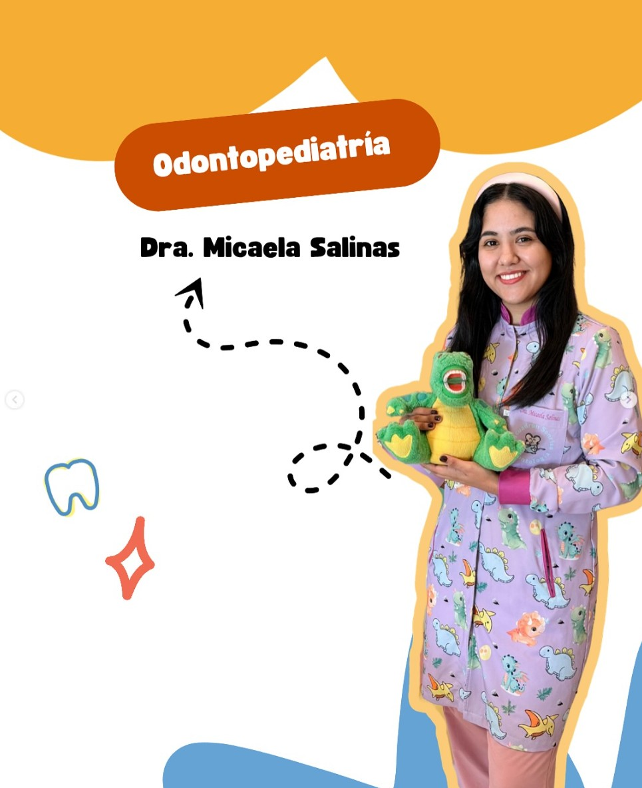
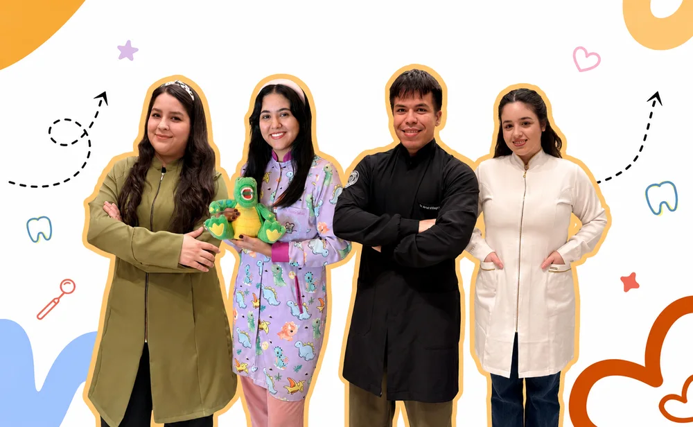
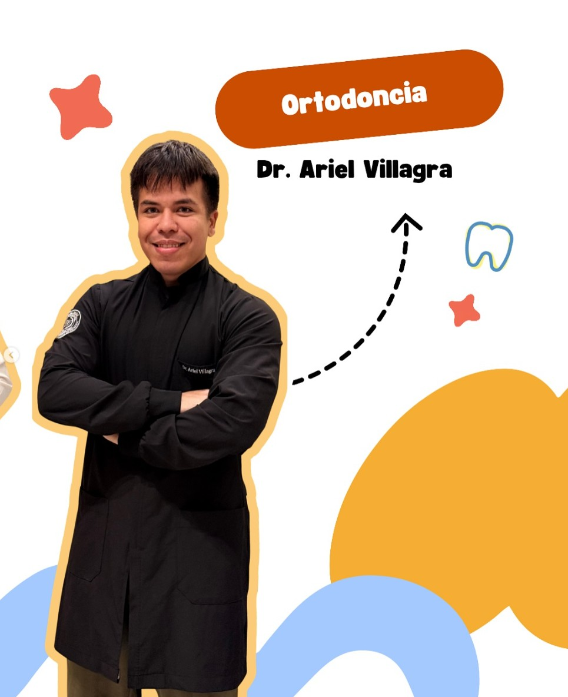
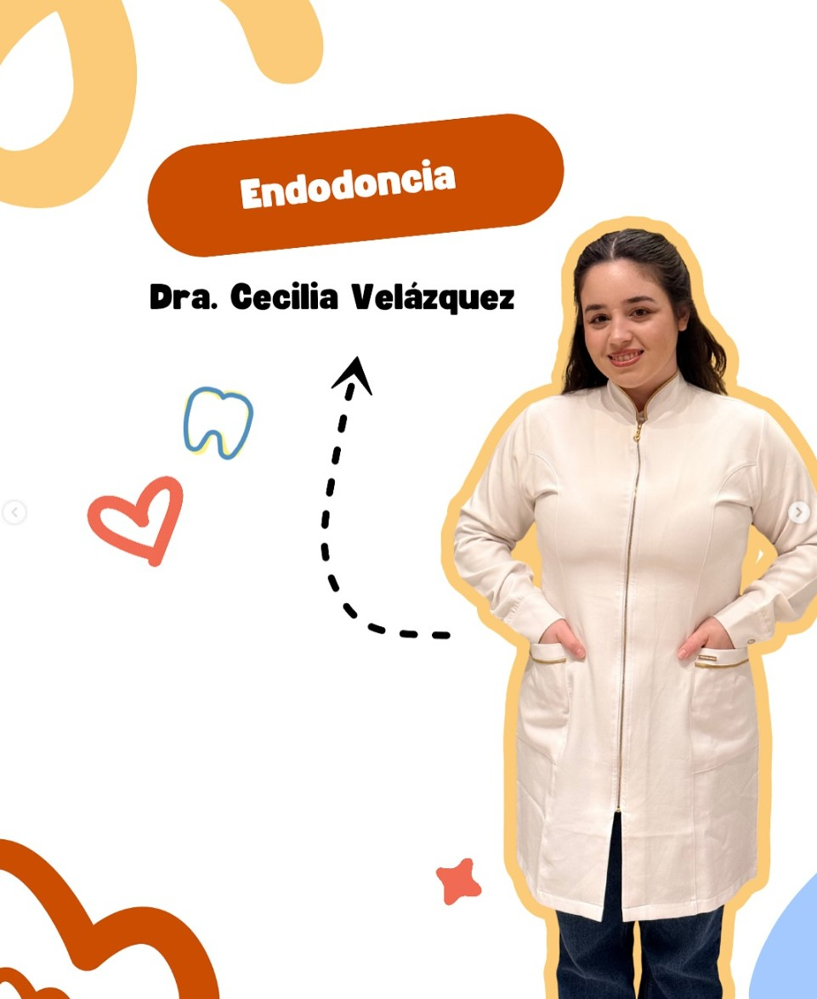
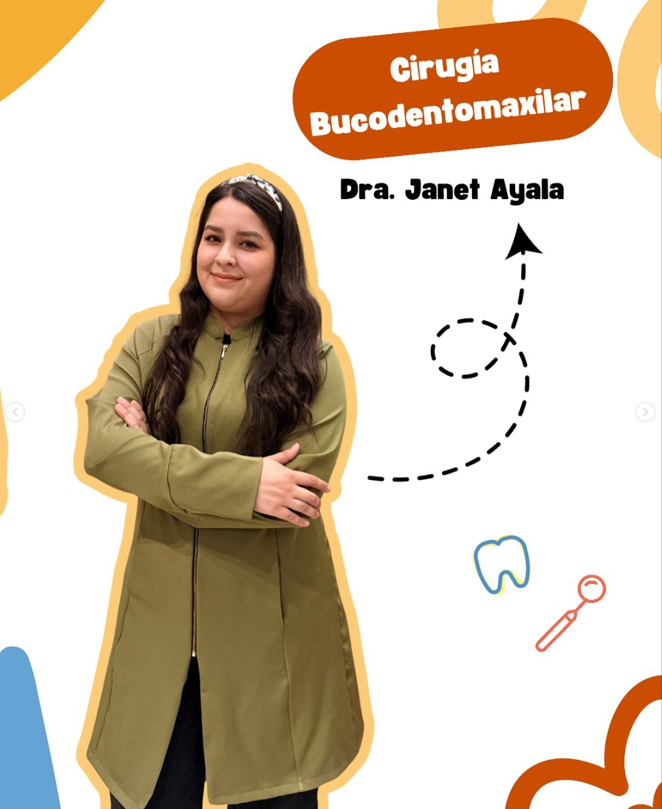

OdontopediatríaDra. Micaela Salinas
Primeras experiencias, prevención y atención infantil respetuosa.



Equipo Escuadrón
Detrás de cada sonrisa hay un equipo que se encarga de cuidarla con dedicación y pasión. En nuestro consultorio te recibimos con la mejor energía, un trato cercano y el profesionalismo que tu salud bucal merece.
Acompañamos a peques, familias y adultos con una atención clara, amable y organizada.
Cuidamos cada etapa con criterio, dedicación y una mirada integral de la salud bucal.
Plantel
Cada profesional aporta una mirada distinta para cuidar sonrisas infantiles, jóvenes y adultas con orden, calma y criterio clínico.
Agendar una cita
OdontopediatríaPrimeras experiencias, prevención y atención infantil respetuosa.

OrtodonciaAcompañamiento del crecimiento, mordida y estética funcional.

EndodonciaResoluciones conservadoras cuando la sonrisa necesita apoyo especializado.

Cirugía dentoalveolarAtención integral y procedimientos con previo agendamiento.
Valores
Nos guiamos por gestos simples: escuchar, explicar y acompañar cada cita con calma.
Respetamos tiempos, emociones y primeras experiencias.
Explicamos cada paso para que todos se sientan seguros.
Hábitos pequeños para cuidar sonrisas a largo plazo.
Familias informadas, citas organizadas y trato amable.
 Agendar
Agendar